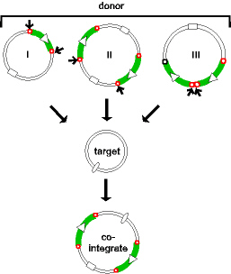

 |
Different ways of forming cointegrates Replicative and non-replicative transposition as mechanisms leading to cointegrates. Three "cointegrate" pathways are illustrated. I) by replicative transposition, II) by simple insertion from a dimeric form of the donor molecule and III) by simple insertion from a donor carrying tandem copies of the transposable element.Transposon DNA is indicated by a heavy line and the terminal repeats by small open circles. The relative orientation is indicated by an open arrow head. Square and oval symbols represent compatible origins of replication and are included to visually distinguish the different replicons. Arrows show which transposon ends are involved in each reaction.
|